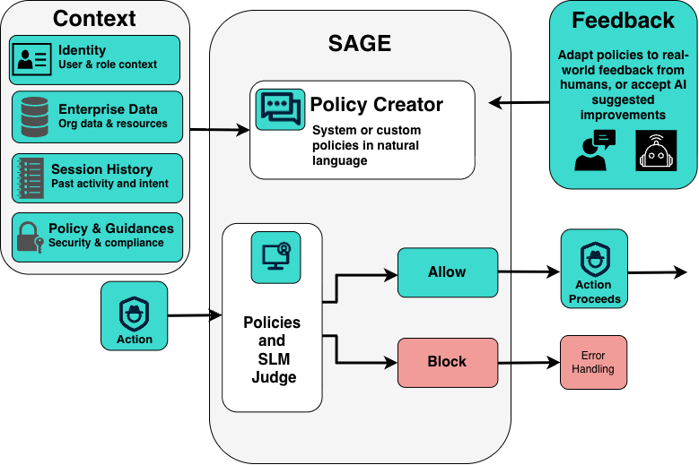

Custom policies
A custom policy is a rule that you write in plain English. The Semantic AI Governance Engine (SAGE) turns it into a policy that it judges against agent activity by intent, not by matching keywords.
System policies cover common security, compliance, and operational risks. Custom policies
cover the requirements specific to your organization: the data, workflows, and tools
that your agents use. You write a custom policy as a description, such as
Don't share sensitive data externally by email, without code.
How SAGE works
SAGE powers the AI judge capability in Agent Cloud. After you enable policies, SAGE operates automatically, and you do not configure it directly. Agent Cloud also includes a set of system policies based on MITRE, OWASP, and NIST frameworks that you can enable. You can create custom policies for SAGE to evaluate.
SAGE expands your description into a structured policy with a goal, definitions of key terms, the behaviors that violate the policy and those that are safe, and labeled examples. That structure, not your original sentence, is what the judge reads. SAGE fills each section with concrete starting points and marks the assumptions that you need to confirm, rates the policy's strength, and recommends improvements for each section. SAGE then distills the policy into a proprietary small language model (SLM) that acts as the judge for that policy and runs on every input and output.
SAGE evaluates user prompts, tool calls (before execution), tool call results (after execution), and agent responses against the policy, along with context such as the agent's identity and role, the session history, and relevant organizational data. Because it judges intent, it can catch violations that use phrasing you did not anticipate. After evaluation, SAGE classifies the action as compliant or a violation and applies the enforcement type that you set for the policy. Monitor analyzes violations after they occur. Block stops violations in real time. Adding your own examples of correct and incorrect classifications reduces false positives and false negatives, because the examples identify alerts or behaviors that Agent Cloud flagged incorrectly or missed.

Enforcement
A custom policy can use Monitor or Block, and Ask on accounts where Ask is enabled. New custom policies start in Monitor. SAGE judges real-time blocking inline, using a model tuned for speed. After-the-fact monitoring uses a separate, more thorough evaluation. Blocking depends on the connection and fails open. For more information, see Enforcement modes and Blocking support by connection.
When to use custom policies
- Restricting which tools an agent can call when it works with a particular data source, customer, or environment.
- Preventing agents from sending categories of internal data, such as proprietary research, partner contracts, or non-public financial figures, to external services.
- Enforcing approval, disclosure, or escalation rules specific to your organization or industry.
- Detecting combinations of otherwise acceptable actions that your organization considers risky.
You can also create a custom policy from an insight's suggestion. For more information, see Viewing insights.
Limitations
- A custom policy is only as accurate as its description, definitions, boundaries, and examples. Use the strength rating and recommendations, and test the policy before you enforce it.
- Testing a policy against sample input or past sessions does not guarantee the same result for every interaction in production.
- Custom policies complement system policies. They do not replace them.
Creating custom policies using an AI judge
Create a custom policy using an AI judge in Agent Cloud to control which tools, models, and actions AI agents in your environment can use.
About this task
Procedure
- Log in to RSC.
-
Click
 and select
Agent Cloud.
The Agent Cloud page appears.
and select
Agent Cloud.
The Agent Cloud page appears. -
Click Policies.
Agent Cloud displays the Policies page, which contains a list of the policies configured in Agent Cloud.
-
Click Create Policy.
Agent Cloud displays the Create Policy wizard.
-
In the text box, describe in natural language the policy to enforce.
Agent Cloud enforces only policies that include tool calls. These policies can restrict which tools an AI agent can use and what content or actions the AI agent can perform as part of these tool calls.Agent Cloud translates the natural language description into a policy to enforce.
-
Click Next.
Agent Cloud displays the Review and Edit Policy page.
-
Review the policy.
The Review and Edit Policy page provides an opportunity to refine your policy.
To help you improve your policy, Agent Cloud provides a Policy Strength score and recommendations when it creates the policy. A higher Policy Strength score means the policy is more specific, leading to more accurate detections. Recommendations typically ask for more detail or clarification of ambiguous terms to avoid assumptions about intent. Below the score are four characteristics of the policy that Agent Cloud uses to determine the Policy Strength score.
Policy characteristic Description Goal and Instructions Provides high-level instructions on what the AI judge should look for. Key Definitions Provides definitions for the policy terms. The Boundary Defines specific boundaries for the policy. Provides upper and lower limits beyond which the policy detects a violation. Reference Examples Provides examples of tool calls and their expected classifications — violating or safe. Policy characteristics that Agent Cloud determines lead to a weaker rating have a number after them. The number indicates how many recommendations are needed to strengthen the policy. -
Click a policy characteristic that displays a number.
The Create Policy wizard provides recommendations to strengthen the policy.
-
Edit the characteristics according to the recommendations.
You can edit all the characteristics with recommendations.
-
Click Reanalyze.
The Create Policy wizard evaluates the policy with the edited characteristics and provides an updated rating.
If there are new recommendations, repeat the process until the Create Policy wizard indicates that you have a strong policy.
- Optional:
Click Test Policy.
The Test Policy page lets you test your policy against specific data. You can either enter information manually to test your policy logic in real time, or you can perform a backtest that runs this policy against previous alerts or sessions.The Create Policy wizard opens the Test Policy page.
-
In Test Type, select Backtest or
Manual Input.
Test type Description Backtest Select this to run the policy against previous alerts or sessions. In Select Sessions, specify the sessions you want to test and then click Run Test. Manual Input Select this to provide the type of content to evaluate against the policy. In Type, select an example scenario. The choices are: - Agent response: A message generated by an AI agent in reply to a user. Use this type to test whether the policy detects harmful, non-compliant, or unsafe content in agent output.
- Full session: A complete conversation between a user and an agent, including all prompts, responses, and tool calls. Use this type to test whether the policy detects patterns that only emerge across the full interaction.
- Tool call: An invocation of an external tool or function made by an agent during a session. Use this type to test whether the policy detects unauthorized or dangerous tool use.
- User prompt: A message sent by a user to an AI agent. Use this type to test whether the policy detects problematic instructions or requests before the agent acts on them.
In Message, enter the message you want to test against the policy, then click Test Policy.
-
Click Next.
The Create Policy wizard moves to the Policy Scope page.
-
Determine the scope of the AI agents or tools this policy affects.
You can use the Agents or Tools tabs on the Policy Scope page to determine which agents or tools to include or exclude from the policy.
Scope Description All agents, or All tools The default. When selected, the policy applies to every agent or tool. Clicking Select Agents or Select Tools and then Edit allows you to specify which agents or tools are excluded from the policy.
Specific agents only, or Specific tools only Clicking Specific agents only or Specific tools only and then Edit allows you to specify which agents or tools are included in the policy. -
Click Next.
The Create Policy wizard displays the Finalize Policy Details page.
-
Provide the policy details.
Field Description Name Name for the policy Description Optional description for the policy Categories Categories to which you can assign the custom policy. These are independent from the system-provided pack categories. The available categories are: - Security: Defends against adversarial attacks and dangerous agent behaviors
- Operational: Guardrails that control what the agent is allowed to do at runtime
- Content Safety: Detects harmful, abusive, or inappropriate language in agent responses
- Compliance: Protects sensitive data and enforces regulatory and organizational obligations
- Configuration: Assesses the quality and correctness of how the agent is set up before it runs
Severity The severity that Agent Cloud assigns to violations of the policy. Status Whether the policy is enabled or disabled Source Indicates that the policy judge is an LLM Enforcement Determines the enforcement level of the policy, Monitor, Block, or Ask. Custom policies always have an enforcement of Monitor. - Click Save.
Results
Testing a custom policy using manual input
Submit sample content to test that a custom policy correctly identifies violations before you rely on it in production.
Before you begin
About this task
- Manual Input enables you to enter sample content and immediately see how the policy evaluates it.
- Backtest runs the policy against real session data from your environment so you can see how it would have performed on past activity.
Procedure
- Log in to RSC.
-
Click and select
Agent Cloud.
The Agent Cloud page appears.
-
Click Policies.
Agent Cloud displays the Policies page.
- Click My Policies.
-
Click the name of the custom policy to test.
Agent Cloud displays the policy details page.
-
Click
 , and then click
Test Policy.
Agent Cloud displays the Test Policy panel.
, and then click
Test Policy.
Agent Cloud displays the Test Policy panel. - In the Test Type field, select Manual Input.
-
Complete the Example Scenario fields.
Field Description Type The type of content to evaluate against the policy. Select one of the following: - Agent response: A message generated by an AI agent in reply to a user. Use this type to test whether the policy detects harmful, non-compliant, or unsafe content in agent output.
- Full session: A complete conversation between a user and an agent, including all prompts, responses, and tool calls. Use this type to test whether the policy detects patterns that only emerge across the full interaction.
- Tool call: An invocation of an external tool or function made by an agent during a session. Use this type to test whether the policy detects unauthorized or dangerous tool use.
- User prompt: A message sent by a user to an AI agent. Use this type to test whether the policy detects problematic instructions or requests before the agent acts on them.
Message The sample content to evaluate against the policy. -
Click Test Policy.
Agent Cloud evaluates the input and displays the results in the Test Policy panel.
-
Review the test results.
Result field Description Status Indicates whether the content was evaluated as Safe or Violation Found. Confidence Indicates the model's confidence in the result: High, Medium, or Low. Reasoning An explanation of why the policy evaluated the content as safe or as a violation. - Optional:
If a manual test result is incorrect, click Was this result
incorrect? to add the sample content as a reference example for
the policy.
Adding a reference example updates the policy's training examples to improve future evaluations. The example is added immediately to the policy being tested.
Results
Testing a custom policy using a backtest
Run a backtest against recent session history to test that a custom policy correctly identifies violations before you rely on it in production.
Before you begin
About this task
- Manual Input enables you to enter sample content and immediately see how the policy evaluates it.
- Backtest runs the policy against real session data from your environment so you can see how it would have performed on past activity.
Procedure
- Log in to RSC.
-
Click and select
Agent Cloud.
The Agent Cloud page appears.
-
Click Policies.
Agent Cloud displays the Policies page.
- Click My Policies.
-
Click the name of the custom policy to test.
Agent Cloud displays the policy details page.
-
Click , and then click Test Policy.
Agent Cloud displays the Test Policy panel.
- In the Test Type field, select Backtest.
-
In Select Test Data, select the test data to use.
Option Description Recent Policy History Tests the policy against up to 20 recent violations, starting with those previously marked as incorrect. Use this option to confirm that your changes stop the policy from flagging content it should allow. Select Specific Sessions Tests the policy against up to 20 sessions you select. Use this option to verify policy behavior on specific scenarios. - Optional: If you selected Select Specific Sessions, select the sessions to include in the backtest.
-
Click Run Test.
Agent Cloud evaluates the input and displays the results in the Test Policy panel.
-
Review the test results.
Result field Description Status Indicates whether the content was evaluated as Safe or Violation Found. Confidence Indicates the model's confidence in the result: High, Medium, or Low. Reasoning An explanation of why the policy evaluated the content as safe or as a violation. - Optional:
If a backtest result is incorrect, click Was this result
incorrect? to add the sample content as a reference example for
the policy.
Adding a reference example updates the policy's training examples to improve future evaluations. The example is added immediately to the policy being tested.
Results
Editing a custom policy using an AI judge
Modify the configuration, conditions, or enforcement settings of an existing Agent Cloud custom policy to align with updated organizational security requirements.
Before you begin
- An active Rubrik Security Cloud (RSC) account with Agent Cloud administrative privileges.
- Familiarity with the natural language or rule-based conditions used to define the policy.
About this task
Procedure
- Log in to RSC.
-
Click and select
Agent Cloud.
The Agent Cloud page appears.
-
Click Policies.
Agent Cloud displays the Policies page, which contains a list of the policies configured in Agent Cloud.
-
Click next to the
policy you want to edit, then click Edit.
Agent Cloud displays the Review and Edit Policy wizard.
- If necessary, revise characteristics to strengthen the policy.
-
Click Reanalyze.
The Review and Edit Policy wizard evaluates the policy with the edited characteristics and provides an updated rating.
If there are new recommendations, repeat the process until the Review and Edit Policy wizard indicates that you have a strong policy.
-
Click Next.
The Review and Edit Policy wizard moves to the Policy Scope page.
- Optional:
Determine the scope of the AI agents or tools this policy affects.
You can use the Agents or Tools tabs on the Policy Scope page to determine which agents or tools to include or exclude from the policy.
Scope Description All agents, or All tools The default. When selected, the policy applies to every agent or tool. Clicking Select Agents or Select Tools and then Edit enables you to specify which agents or tools are excluded from the policy.
Specific agents only, or Specific tools only Clicking Specific agents only or Specific tools only and then Edit enables you to specify which agents or tools are included in the policy. -
Click Next.
The Review and Edit Policy wizard moves to the Finalize Policy Details page.
-
Review the policy details and update as necessary.
Field Description Name Name of the policy Description Optional description for the policy Severity The severity that Agent Cloud assigns to violations of the policy Status Whether the policy is enabled or disabled Categories Categories to which you can assign the custom policy. These are independent from the system-provided pack categories. The available categories are: - Security: Defends against adversarial attacks and dangerous agent behaviors
- Operational: Guardrails that control what the agent is allowed to do at runtime
- Content Safety: Detects harmful, abusive, or inappropriate language in agent responses
- Compliance: Protects sensitive data and enforces regulatory and organizational obligations
- Configuration: Assesses the quality and correctness of how the agent is set up before it runs
Source Indicates that the policy judge is an LLM Type Read-only. Set when the policy was created. Enforcement Determines the enforcement level of the policy, Monitor, Block, or Ask. Custom policies always have an enforcement of Monitor. - Click Save.